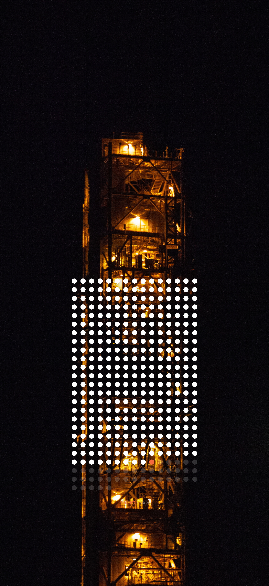
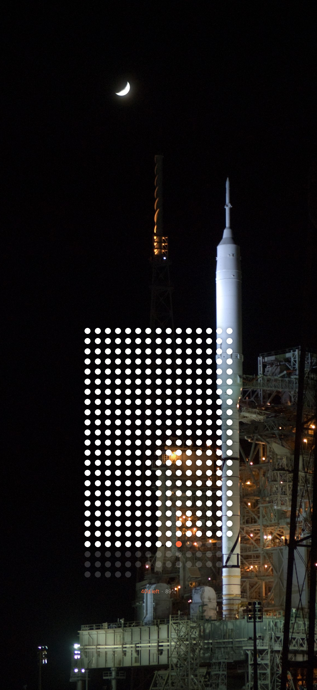
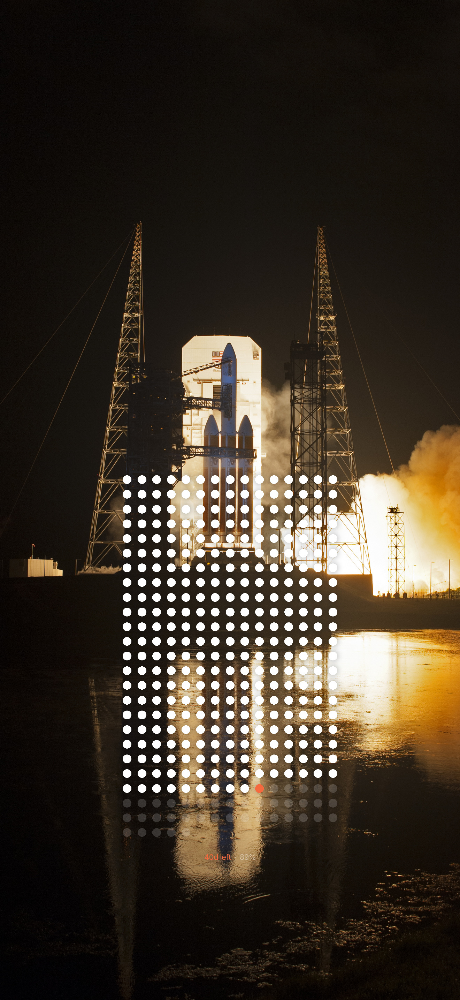
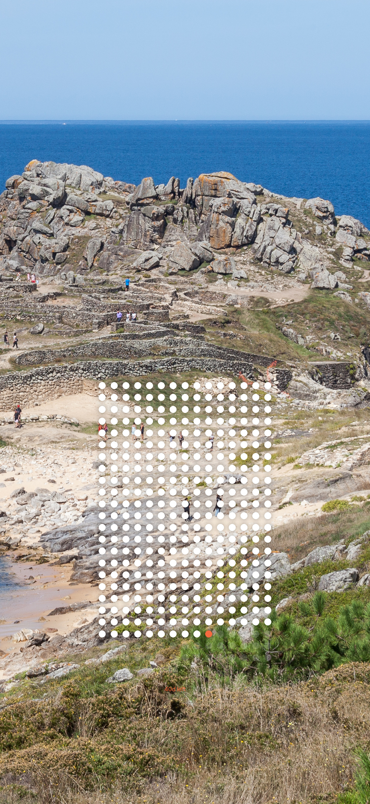

<!doctype html><meta charset=utf-8><meta name=viewport content="width=device-width,initial-scale=1"><title>Wallpaper pool</title><style>body{background:#111;color:#999;font:13px system-ui;margin:16px}main{display:grid;grid-template-columns:repeat(auto-fill,minmax(150px,1fr));gap:14px}img{width:100%;border-radius:14px}a{color:#ddd}</style><main><figure><figcaption>1. <a href="https://images.nasa.gov/details/KSC-20190627-PH_JBS01_0244">Mobile Launcher Move to Pad</a><br>NASA/Ben Smegelsky · nasa/rocket launch night</figcaption></figure><figure><figcaption>2. <a href="https://images.nasa.gov/details/KSC-2009-5860">KSC-2009-5860</a><br>KSC · nasa/rocket launch night</figcaption></figure><figure><figcaption>3. <a href="https://images.nasa.gov/details/KSC-20180812-PH_AWG03_0006">Parker Solar Probe Liftoff</a><br>NASA/Tony Gray and Tim Powers · nasa/rocket launch night</figcaption></figure><figure><figcaption>4. <a href="https://images.nasa.gov/details/PIA07245">Mars Reconnaissance Orbiter, Front View Artist Concept</a><br>NASA/JPL · nasa/artist concept planet</figcaption></figure><figure><figcaption>5. <a href="https://commons.wikimedia.org/wiki/File:2014_Baro%C3%B1a._Castro_de_Baro%C3%B1a._Porto_do_Son-2.jpg">2014 Baroña. Castro de Baroña. Porto do Son-2</a><br>Luis Miguel Bugallo Sánchez (Lmbuga) · wikimedia/Featured pictures of coasts</figcaption></figure></main>
